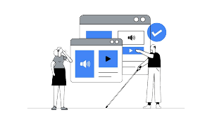

La Web Para Todos: Accesibilidad en el Diseño Digital.
"Un sitio sin accesibilidad es como una calle sin semáforos sonoros, una película sin subtítulos o un libro sin braille."
La accesibilidad web es el conjunto de prácticas y principios que garantizan que cualquier persona, sin importar sus capacidades, pueda navegar y utilizar un sitio web sin obstáculos. Esto incluye a personas con discapacidades visuales, auditivas, motoras y cognitivas, pero también beneficia a usuarios en distintas situaciones (como quienes usan dispositivos móviles o conexiones lentas).
Los 5 elementos que una página web con accesibilidad web debe tener.
¿Cómo se hace un sitio web accesible?
Aquí te presentamos los principios básicos para que cualquier página sea accesible:
1. Agregar Texto Alternativo a Imágenes.
- Permite que los lectores de pantalla describan las imágenes a personas con discapacidad visual.
- Debe ser claro, conciso y relevante.
Ejemplo: En lugar de "imagen1.jpg", usa: "Mujer leyendo un libro en una biblioteca."
2. Mejorar el Contraste de Colores.
- El texto debe destacar sobre el fondo.
- Personas con baja visión o daltonismo necesitan combinaciones bien definidas.
Ejemplo: Usa herramientas como Contrast Checker para verificar la legibilidad de los colores.
3. Hacer el Sitio Navegable sin Mouse.
- Todas las funciones deben poderse usar con el teclado (Tab, Enter, Espacio).
- Evita que los usuarios queden atrapados en elementos sin opción de salir.
Ejemplo: Prueba navegar tu página solo con el teclado.
¿Puedes acceder a todos los enlaces y botones?
4. Incluir Subtítulos y Transcripciones.
- Los videos deben tener subtítulos para personas con discapacidad auditiva.
- Las transcripciones permiten que cualquier usuario acceda a la información.
Ejemplo: Plataformas como YouTube y Kapwing permiten agregar subtítulos automáticos.
5. Crear un Diseño Claro y Ordenado.
- Usa encabezados (H1, H2, H3…) para estructurar la información.
- Evita párrafos largos y complejos.
- Usa iconos y elementos visuales de apoyo.
"Un sitio sin accesibilidad es como una calle sin semáforos sonoros, una película sin subtítulos o un libro sin braille."
Teclado de letras braille.
¿Por qué es importante?
1. Inclusión Universal: Más de mil millones de personas en el mundo tienen alguna discapacidad.
2. Experiencia de Usuario Mejorada: Un sitio accesible es más intuitivo y funcional para todos.
3. Cumplimiento Legal: Cada vez más países exigen accesibilidad web mediante normativas.

4. Beneficio SEO: Los sitios accesibles suelen posicionarse mejor en Google.
Reflexión Final.
¿Tu sitio web es realmente accesible?
Es momento de hacer el cambio.
- Diseñar para todos no es un extra, es una responsabilidad.
- Cada pequeño cambio en accesibilidad puede hacer una gran diferencia en la vida de alguien.
- Un sitio accesible es un sitio mejor para todos.
Para conocer más del tema, ingresa a este video y analiza el storytelling que tenemos para ti.
Recursos para Mejorar la Accesibilidad.
WebAIM - Evaluador de accesibilidad.
Contrast Checker - Verifica los colores.
Google Lighthouse - Test de accesibilidad.
Martínez C.A., Marín A.L. (9 Febrero 2025). Storytelling Accesibilidad [Archivo de video] Recuperado de: https://www.youtube.com/watch?v=8JU-CzggRNg